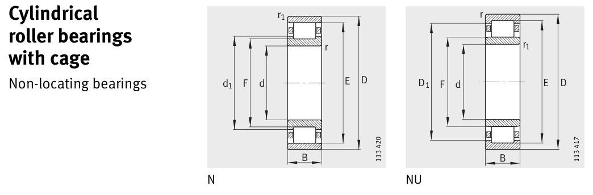

Original catalogue drawing - FAG Schaeffler HR 1, page 378

Scanned from the manufacturer catalogue page listing this part number. All part numbers printed on that table share the same drawing.
Scale cross-section
Blue = inner / outer ring, yellow = rolling element. Drawn to scale from this part's own
dimensions for selection reference only - not a manufacturing or assembly drawing.
Dimension table (mm / inch)
Symbol
Dimension
mm
inch
d
Bore diameter
260
10.2362
D
Outside diameter
540
21.2598
B
Inner-ring / bearing width
102
4.0157
r
Chamfer (min)
6
0.2362
E
Roller-set outside dia.
477
18.7795
F
Roller-set bore dia.
337
13.2677
Notes
Weights are given in kg. Load ratings are shown in both the original catalogue units and the converted value (1 N = 0.2248 lbf). Data is provided for selection reference only - confirm against the latest official catalogue before ordering.
Main dimensions
Bore d (mm)
260
Outside dia. D (mm)
540
Width B (mm)
102
Inner-ring shoulder dia. D1 (mm)
454.6
Dimension E (mm)
477
Dimension F (mm)
337
Load ratings & speeds
Basic dynamic load rating Cr (lbs)
427137
Basic static load rating Cor (lbs)
584503
Basic dynamic load rating Cr (N)
1.9e+06
Basic static load rating C0r (N)
2.6e+06
Fatigue limit load Cur (N)
198000
Limiting speed nG (rpm)
2,000
Reference speed nB (rpm)
920
Weight
Weight (kg)
121.0
Mounting dimensions (fillets / shoulders)
Housing fillet r max (mm)
6
Chamfer r1 min (mm)
6
Shaft shoulder da (mm)
286
Shaft shoulder db (mm)
339.7
Housing shoulder Da (mm)
514
Housing fillet ra max (mm)
5
Housing fillet ra1 max (mm)
5
Bearing life (ISO 281 basic rating life)
C / P
Equivalent load P (N)
L10 (106 rev)
L10h at 600 rpm
4
475,000
102
2,822
6
316,667
392
10,903
8
237,500
1,024
28,444
10
190,000
2,154
59,845
15
126,667
8,323
231,207
Basic rating life per ISO 281: L10 = (C/P)10/3 with C = 1,900,000 N. Hours = L10 x 106 / (60n). Life-modification factors for lubrication, contamination and temperature (aISO) are not included.
Source & traceability
Brand
FAG
Source catalogue
FAG / Schaeffler Rolling Bearings HR 1
Catalogue page
p.378 (dimensions)
Load ratings in newtons, fatigue limit load Cur, limiting speed nG and reference speed nB.
Send us the quantity you need and we will come back with price and
lead time, normally within 24 hours. Equivalent parts from other brands can be quoted at the same time.